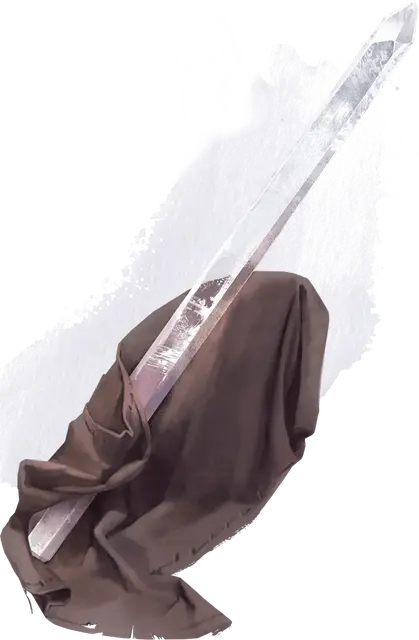

Говорящий с камнями кристалл
Stonespeaker Crystal
Чудесный предмет, редкий (требуется настройка)

Рекомендованная стоимость 501-5 000 зм
Девятнадцатидюймовый осколок кварца, созданный каменными гигантами библиотекарями Грейвенхоллоу, даёт вам преимущество при проверках Интеллекта (Расследование), пока находится у вас.
У кристалла 10 зарядов. Держа его, вы можете потратить действие, чтобы использовать часть его зарядов для накладывания с его помощью одного из хранящихся в нем заклинаний: разговор с животными [speak with animals] (2 заряда), разговор с мёртвыми [speak with dead] (4 заряда), разговор с растениями [speak with plants] (3 заряда).
Когда вы накладываете заклинание школы Прорицания, вы можете использовать кристалл вместо одного материального компонента, который в обычном случае потреблялся бы этим заклинанием, ценой в 1 заряд за каждый уровень заклинания. Кристалл не поглощается заклинанием при таком использовании.
Кристалл восстанавливает 1к6 + 4 израсходованных зарядов ежедневно на рассвете. Если вы истратили последний заряд кристалла, совершите бросок к20. При результате 1, кристалл обращается в пыль и исчезает навсегда.